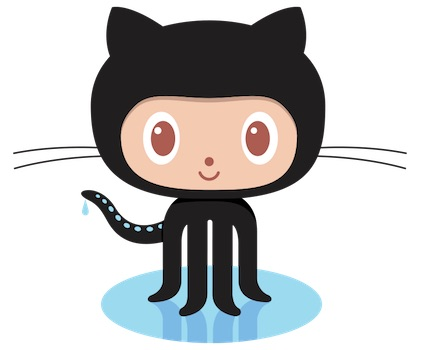

<!doctype html>
<html>
	<head>
		<meta charset="utf-8">
		<meta name="viewport" content="width=device-width, initial-scale=1.0, maximum-scale=1.0, user-scalable=no">

		<title>CapTech and Open Source</title>

		<link rel="stylesheet" href="css/reveal.css">
		<link rel="stylesheet" href="css/theme/night.css">

		<!-- Theme used for syntax highlighting of code -->
		<link rel="stylesheet" href="lib/css/zenburn.css">

		<!-- Printing and PDF exports -->
		<script>
			var link = document.createElement( 'link' );
			link.rel = 'stylesheet';
			link.type = 'text/css';
			link.href = window.location.search.match( /print-pdf/gi ) ? 'css/print/pdf.css' : 'css/print/paper.css';
			document.getElementsByTagName( 'head' )[0].appendChild( link );
		</script>
	</head>
	<body>
		<div class="reveal">
			<div class="slides">
			 <section data-transition="zoom" data-markdown data-markdown data-separator="^\n---\n$" data-separator-vertical="^\n--\n$">
			  <script type="text/template">


### CapTech Open Source Plan
---
<br />
Brought to you by Wray Mills

Powered By [CapTech Consulting](https://www.captechconsulting.com)


			  
---


<!-- .slide: data-background-image="images/catbaz.jpg" -->
### Assumptions
#### Open Source is Good and Strategic
---
* Improve CapTech brand
* Improve CapTech creds
* Enhance individuals' brands
* Open up prospective technology spaces/clients/relationships
 * [Capital One](https://github.com/capitalone), [Wells Fargo](https://github.com/WellsFargoFullStackTDD-Charlotte), [React](https://github.com/facebook/react), [Heroku](https://github.com/heroku), [Kubernetes](https://github.com/kubernetes), [Microsoft](https://github.com/Microsoft), [AWS](https://github.com/alexa)
* Get ahead of competitors
 * [Deloitte](https://github.com/Deloitte-VA), [Accenture](https://github.com/Accenture), [Singlestone](https://github.com/singlestone)

--


<!-- .slide: data-background-image="images/catbaz.jpg" -->
#### OpenSource = Good
---
* CapTech Open Source products:
 * Original projects
 * Reference for blogging/articles/presentations
 * Reference for training/tech challenges
* CapTech has been active in contributing and leveraging open source since the beginning:
 * Python - 1999, Sleepycat - 2000, [BS4J - 2002](https://sourceforge.net/projects/bs4j/files/bs4j/)
* GitHub is the [current] place for Open Source
* Oh, reality is that the train has left the station...


---


<!-- .slide: data-background-image="images/elephant.jpg" -->
### Current State
#### People Lacking Unification
---
* Many Employees (especially Engineers) already have personal GitHub accounts
* Some Service Offerings have GitHub orgs
* GitLab is internal/private
* Several "CapTech" GitHub orgs exist
* Sporadic references to CapTech from personal and project GitHub accounts
* We don't really know existing open source [GitHub] contributions  


---


<!-- .slide: data-background-image="images/mysql.jpg" -->
### To-Be
#### Long-Term Normative Scenario
---
* Encourage personal GitHub accounts
* Use the single CapTechConsulting GitHub Org
* Personal/Project and Company contributions are known and tracked
 * Individual GitHub users [employees] shall reference CapTech


---

<!-- .slide: data-background-image="images/Apache.jpg" -->
### Next Steps
#### So, by end of year
---
* Build out GitHub org with Legal and Marketing
coordinated description for an approved project:
 * Alfred (Apache 2.0 or MIT License)
* Sketch a policy with specific guidance on GitLab vs. GitHub
* Continue conversations with the active individuals to start converging activities
* Initial Company-wide Open Source comm.
 

--


<!-- .slide: data-background-image="images/Apache.jpg" -->
### Next Steps
#### End of year communication
---
* Announce CapTech Open Source Strategy/Policy coming in 2018
* In the interim:
 * Your existing GitHub is your account.
 * GitHub is a form of social media and thus social media policy applies.
 * GitHub is not a replacement for GitLab. Official business should
never leave CapTech servers, workstations, or assets.
* Announce Alfred

--


<!-- .slide: data-background-image="images/Apache.jpg" -->
### At this point
#### TO BE CLEAR
---
* NOT providing a new mechanism to leak assets.
* NOT endorsing the work CapTechers are doing outside of CapTech.
* NOT incubating projects.
* ARE Providing Marketing/Legal coordination to open source Alfred.
* ARE Relieving anxiety around our lack of an Open Source presence.


---


<!-- .slide: data-background-image="images/Octocat-back.jpg" -->
### Additional Benefits to going Open on GitHub


--


<!-- .slide: data-background-image="images/Octocat-back.jpg" -->
### An Open Source Presence
#### Aligns with strategic objectives across the organization
---
* Practice Areas
 * One stop shopping for knowledge sharing in a standards-based, industry best practices way
 * Provides integrations with all the right tools (CI/CD, DevOps)


--


<!-- .slide: data-background-image="images/Octocat-back.jpg" -->
### An Open Source Presence
#### Aligns with strategic objectives across the organization
---
* Business Dev. and Marketing
 * Project Incubation for brand awareness
 * Sharing project to project when innovating reusable components
 * GitHub is defacto place for developers to congregate and validate street cred (license to code)


--


<!-- .slide: data-background-image="images/Octocat-back.jpg" -->
### An Open Source Presence
#### Aligns with strategic objectives across the organization
---
* Recruiting and PR
 * Improve tech screen rates (validation)
 * "Check out our GitHub org"
 * Showcase internal innovations (like NLP)
 * Showcase community outreach
 * Retention mechanism
 * Gamification (Already work on an Alexa skill - forks and stars)


--


<!-- .slide: data-background-image="images/Octocat-back.jpg" -->
### More Visible Community Contributions
#### Use the Source, Luke
---
* Readme's with ties into build
 * https://github.com/wray/alexa_python
* Learning projects
 * slackbot
 * alexa
 * maker (e.g. rPi sensors, model rockets, etc.)


--


<!-- .slide: data-background-image="images/Octocat-back.jpg" -->
### More Visible Community Contributions
---
* Turn Projects into ongoing events
* Vice Versa
* Meetups (Easy Wins)
* Also raise vendor awareness
 * Companies like Amazon are "looking" in places like GitHub and medium for thought leaders
 * They Appreciate Community Involvement just as much as locals
 * swag


--


<!-- .slide: data-background-image="images/Octocat-back.jpg" -->
### Better Company-Wide Situational Awareness
#### Choose to ride the wave or get left behind
---
* At Cap1, we learn to search in GitHub when trying to find who to ask for help in slack.
* Latest GitHub API is GraphQL!
* Today it is more about what you do/have done in code and less about your talk.
* The Cloud levels the field. No excuses for not "leveraging open source in the cloud using big data to make real-time decisions" - Rich Fairbank


---


<!-- .slide: data-background="#ff2222" -->
### The end
#### Questions / Comments?
---
* Ask for access to repo to contribute or add issues/comments.


</script>
			  </section>
			  
			</div>
		</div>

		<script src="lib/js/head.min.js"></script>
		<script src="js/reveal.js"></script>

		<script>
			// More info about config & dependencies:
			// - https://github.com/hakimel/reveal.js#configuration
			// - https://github.com/hakimel/reveal.js#dependencies
			Reveal.initialize({
				// Display the page number of the current slide
				slideNumber: true,
				dependencies: [
					{ src: 'plugin/markdown/marked.js' },
					{ src: 'plugin/markdown/markdown.js' },
					{ src: 'plugin/notes/notes.js', async: true },
					{ src: 'plugin/highlight/highlight.js', async: true, callback: function() { hljs.initHighlightingOnLoad(); } }
				]
			});
		</script>
	</body>
</html>
